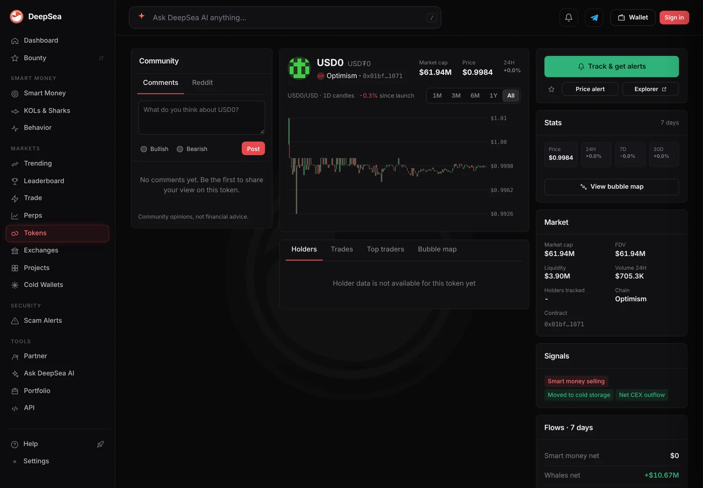
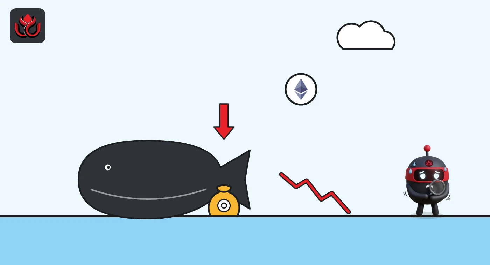

Sharks sold $12.85 million of tokens and bought $7.98 million as ether fell 4.7%
DeepSea's live feed shows big wallets were net sellers on ether's down day. A dollar token on Optimism took most of the selling, and one Monad wallet bought $2.46 million of staked ether.
Key points
- In the 24 hours to 12:34 a.m. ET on November 9, shark wallets sold $12.85 million of tokens and bought $7.98 million across 1,018 trades, DeepSea's live feed shows.
- The biggest net sale was USD₮0, a dollar token, on Optimism: $4.91 million sold and $333,715 bought.
- On Monad, one wallet bought $2.46 million of wstETH (staked ether) and one sold $2.31 million of WETH (wrapped ether).
 What DeepSea's data shows
What DeepSea's data shows
DeepSea's live feed adds up trades by shark wallets (big wallets DeepSea tracks) over the last 24 hours. At 12:34 a.m. ET it listed 45 token rows on nine chains: $12.85 million sold and $7.98 million bought, a net $4.87 million out, in 1,018 trades.
Optimism carried most of it: $8.15 million sold against $3.72 million bought. USD₮0 led with $4.91 million sold by seven wallets in 69 trades, against $333,715 bought. DeepSea's USD₮0 page for Optimism showed a $61.94 million market cap and only $705,300 of 24-hour DEX volume when we checked. One wallet sold $532,375 of liquidUSD. The busiest token was WLD (Worldcoin): 11 wallets bought $1.93 million and sold $1.29 million in 181 trades. OP traded about $1.01 million each way.
Ether tokens moved on Monad. One wallet bought $2.46 million of wstETH in three trades, and one sold $2.31 million of WETH, also in three. DeepSea's aggregate does not say whether it was the same wallet. Bitcoin tokens were sold: $412,554 of cbBTC on Monad (with $12,756 bought) and $54,520 of WBTC on Arbitrum.

Data: DeepSea (desea.io), checked November 9, 2026, 12:34 a.m. ET.
The market backdrop
CoinGecko showed ether at $2,127 at 12:45 a.m. ET on November 9, down 4.7% in 24 hours. Bitcoin was at $74,313, down 1.9%. Staked ether (wstETH) fell by the same 4.7%, as it tracks ether's price.
Net flow by token
Most rows were small. Six tokens account for nearly all the net movement.
Shark net buying (+) or selling (-), 24 hours
US$ million
24 hours to 12:34 a.m. ET, November 9, 2026. Source: DeepSea live feed.

How big is that?
DefiLlama counted $12.21 million of DEX (decentralized exchange) volume on Optimism in 24 hours when we checked on November 9, and $25.72 million on Monad. The sharks' $11.87 million of Optimism trades is close to the chain's whole DEX total. Not every trade DeepSea counts goes through a DEX, though: deposits into lending pools and token swaps by other routes can also show up.
LC Insight analysis
This section is our reading of the facts above, not a statement of fact.
- We think the Optimism selling was money leaving one dollar token. USD₮0 tracks the dollar, so selling it moves cash elsewhere and says little about price bets.
- The Monad pair is the one ether trade of size. If the same wallet sold WETH and bought wstETH, it kept its ether exposure and added staking yield. The data cannot confirm that.
- Sharks were net sellers by $4.87 million on a down day. That is small next to ether's market, so we would not read it as a signal.
What's next
- Whether USD₮0 selling on Optimism continues
- Whether the Monad wstETH position grows or is unwound
- Ether's price near $2,100
Disclaimer. This article is based on public information and the sources listed below as of the update time shown. It is for information only and is not investment, legal or tax advice. Figures may change as companies and authorities publish new data.
Sources
- DeepSea, live feed 24-hour aggregate (read November 9, 2026, 12:34 a.m. ET)
- DeepSea, USD₮0 token page on Optimism (read November 9, 2026, 12:52 a.m. ET)
- CoinGecko, Ethereum (ETH) price (November 9, 2026, 12:45 a.m. ET)
- DefiLlama, OP Mainnet DEX volume (read November 9, 2026, 12:55 a.m. ET)
- DefiLlama, Monad DEX volume (read November 9, 2026, 12:50 a.m. ET)